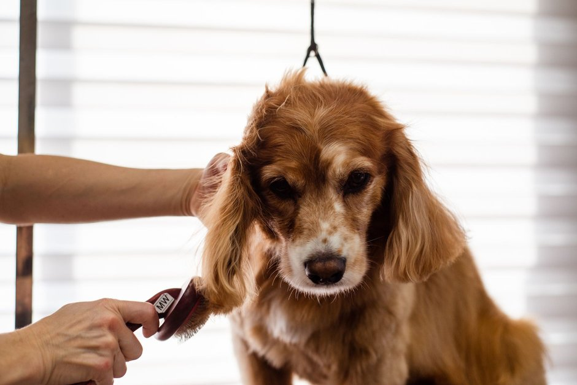

Les techniques de toilette pour entretenir la beauté de votre animal de compagnie

Photo: Goochie Poochie Grooming / Pexels
Un toilettage régulier garde le poil propre et la peau en bonne santé, et il permet de remarquer tôt une bosse, une plaie ou des parasites. Voici les bases, à adapter à l'espèce et au type de poil de votre animal.
Le brossage
La fréquence dépend du poil. Un animal à poil court se brosse une ou deux fois par semaine ; un animal à poil long ou frisé peut demander un brossage quotidien pour éviter les nœuds. Utilisez une brosse ou un peigne adapté et allez dans le sens du poil. Pendant la mue, brossez plus souvent. Les lapins se brossent aussi, mais les hamsters n'ont pas besoin de brossage ni de bain.
Le bain
La plupart des chiens se lavent seulement quand ils sont sales ou qu'ils sentent mauvais, souvent tous les un à trois mois. Les chats se lavent eux-mêmes et ont rarement besoin d'un bain. Utilisez toujours un shampoing conçu pour l'espèce, jamais un produit pour humains. Rincez à fond, séchez avec une serviette et, si besoin, avec un séchoir à air tiède tenu à distance. Ne mettez jamais un animal dans une sécheuse à linge.
Les griffes
Utilisez un coupe-griffes fait pour les animaux et coupez seulement l'extrémité, loin de la partie rose où passent les vaisseaux. Si vous n'êtes pas sûr, demandez à votre vétérinaire ou à un toiletteur de vous montrer. En cas de saignement, appuyez doucement avec un linge propre et appelez la clinique si cela ne s'arrête pas.
Les oreilles et les yeux
Regardez les oreilles chaque semaine. Une oreille rouge, qui sent mauvais ou qui produit beaucoup de cérumen noir doit être vue par le vétérinaire. N'introduisez jamais de coton-tige dans le conduit. Essuyez les coins des yeux avec un linge propre et humide, un par œil.
Les dents
Brossez les dents avec une brosse et un dentifrice faits pour animaux : jamais de dentifrice pour humains. Le brossage idéal est quotidien ; quelques fois par semaine apporte déjà un bénéfice. Commencez en douceur, en laissant l'animal goûter le dentifrice.
Quand faire appel à un toiletteur
Certaines races demandent une coupe régulière, souvent toutes les 4 à 8 semaines. Un toiletteur professionnel peut aussi dégager les nœuds serrés, qu'il vaut mieux ne pas couper soi-même avec des ciseaux.
Ce qui doit vous alerter
Consultez un vétérinaire en cas de perte de poils par plaques, de démangeaisons intenses, de croûtes, de bosse qui grossit, de mauvaise haleine persistante ou de peau rouge. Faire le toilettage dans le calme, avec des friandises, aide l'animal à l'apprécier avec le temps.
Produits recommandés
En tant que Partenaire Amazon, je réalise un bénéfice sur les achats remplissant les conditions requises.